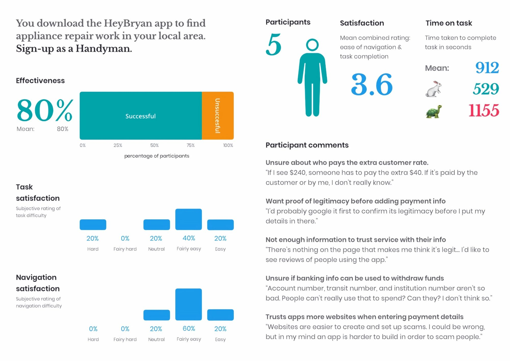
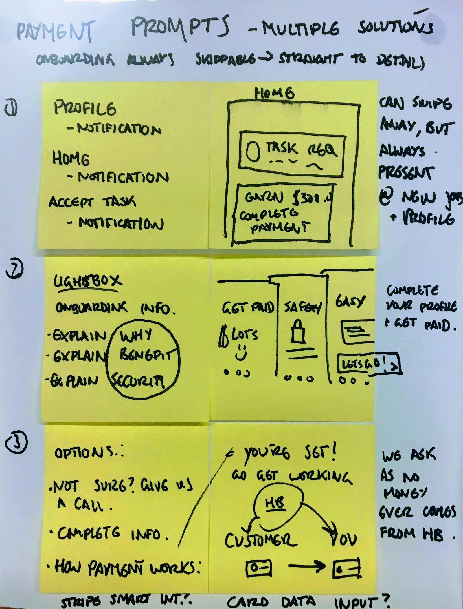
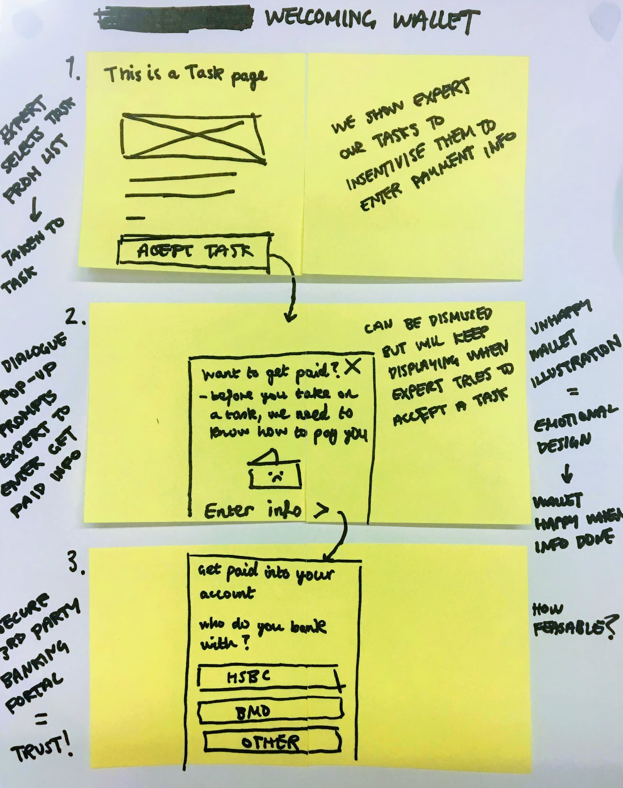
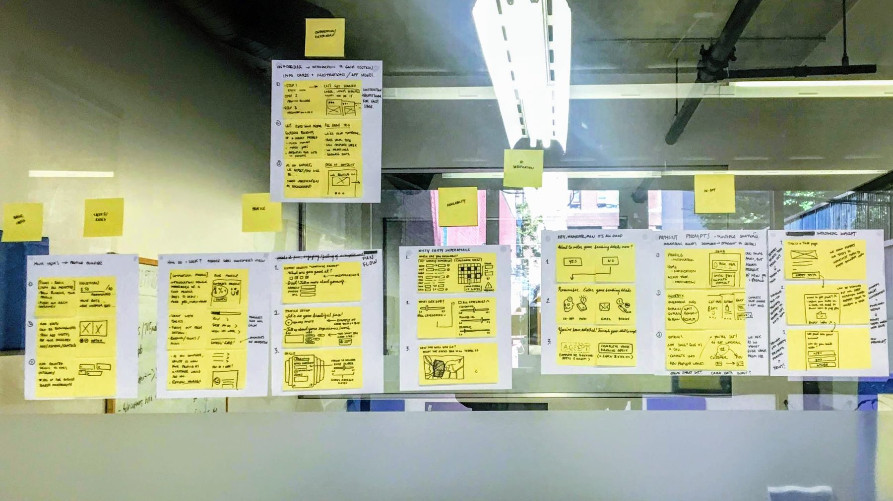

Problem
44% of experts were dropping off during onboarding when asked to enter banking details. It was the first time we asked for sensitive information, and most users weren't ready. Fewer experts meant fewer completed tasks, which meant less revenue for the company.
Goal
Increase the number of experts who complete onboarding and submit payment details.
Process
I followed a design-thinking process to explore and test new approaches quickly.
Understand the problem
Research users, business goals, and context.
Define the opportunity
Identify the core problem worth solving.
Explore solutions
Generate and evaluate potential approaches.
Build & iterate
Create prototypes and refine through feedback.
Validate impact
Measure outcomes and learn what worked.
Research
User research showed the issue was a lack of trust in an unestablished product. Experts didn't feel confident entering banking details so early. Key themes from the interviews included:
- Users wanted proof the platform was legitimate
- There was confusion about how payment info would be used
- Users weren't sure who covered customer fees

Define
We reframed the problem with key questions:
- How might we improve trust and legitimacy?
- How might we delay sensitive steps?
- How might we provide reassurance early in the journey?
How might we ensure experts feel comfortable entering their payment information?
Sketch
We explored ideas like delaying payment entry, highlighting Stripe earlier, and clarifying how payments worked.


Decide
We prioritised ideas that addressed trust and timing. The most promising concepts:
- Defer payment setup
- Show Stripe branding early
- Trigger payment entry only after real user intent (e.g. accepting a task)

Prototype
I used our design system to build a high-fidelity prototype that reflected the new onboarding journey. The goal was to feel transparent and secure without interrupting flow.
Validate
We tested with experts again. Most appreciated being able to skip payment and felt more confident seeing Stripe. The experience felt clearer and safer.

What we changed
We redesigned the onboarding flow to build trust and reduce friction:
- Experts could now skip payment setup and add it later
- We clarified how and when payment info would be used
- We delayed the prompt for payment until after accepting a first task